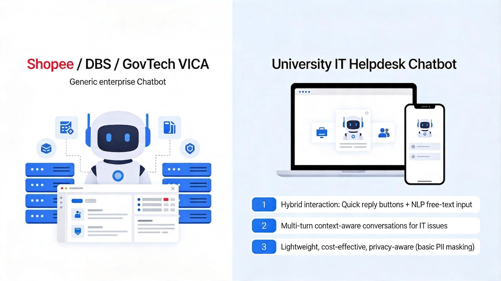
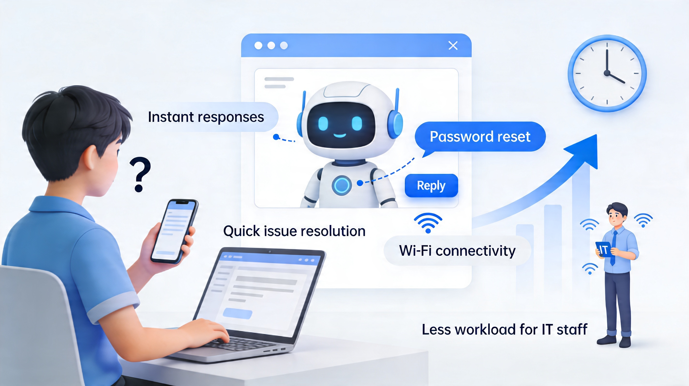

Marketing Tools

Project USP
The proposed chatbot system differentiates itself by adopting a hybrid interaction approach that combines guided quick reply buttons with NLP-based free-text input, allowing users to interact both intuitively and flexibly. The system also supports multi-turn conversations through context management, enabling it to guide users step-by-step in resolving common IT-related issues. Unlike large-scale enterprise chatbot solutions, this system is specifically tailored for a university IT helpdesk environment, offering a lightweight, cost-effective, and user-friendly solution while incorporating essential features such as basic PII data masking to ensure user privacy.

How it improves user workflow / productivity
The chatbot significantly improves the efficiency of handling IT-related inquiries by providing instant responses to frequently asked questions, eliminating the need for users to wait for human assistance. Through guided interactions and quick reply options, users can resolve common issues such as password resets or WiFi connectivity within seconds. This reduces the workload on IT helpdesk staff and allows them to focus on more complex issues. It is estimated that the chatbot can reduce response time by up to 70–80% for common queries, thereby enhancing overall user experience and operational efficiency.